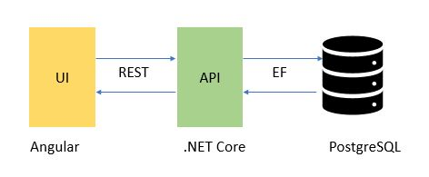

This application demonstrate how to build an accounting applications using ASP .Net Core, Angular and Entity-Framework.
Application is built in layers to have separation of concerns and it follows the typical REST based architecture.
Following diagram illustrate different layers and technology stack.

Application is built around accounting domain.
It demonstrate how to do double-entry accounting, posting to ledgers, prepare reports e.g. Trial Balance, Balance Sheet and Income Statement. In the book, I also briefly describe Debit/Credit rules, how to validate transactions and other accounting concerns. If more information about a particular topic is needed, then it can be easily looked up on the internet.
Above architecture diagram showed the core technologies used for this application. This technology stack is quite popular, common and works nicely for these kind of applications.
The corresponding book and this application is built around accounting domain. However, the technology stack can be reused for various types of applications. The loose coupling between various parts of the application make it very easy to extend and/or reuse various components.
In the book, I have explained in a step by step fashion that how you can use these technologies to build nice user experience and powerful applications and after reading this book you will have good foundation to build on top of what you will learn from here.
You have various options to reach out to me. One place is the source from where you get this book, the book corresponding web-page or you can reach out to me via my website on the following URL:
For more information, please visit hexquot.com.